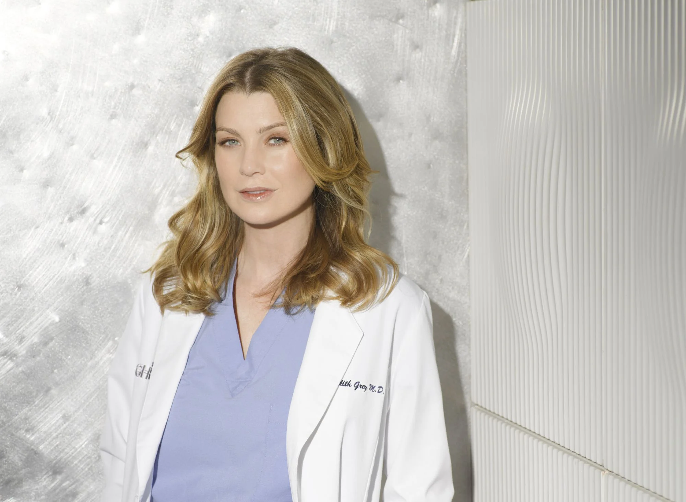

Personajes destacados

Meredith Grey
Ellen Pompeo
Protagonista. Cirujana general y la ex-jefa de cirugía, cirugía general y directora del programa de residencia en el hospital Grey Sloan Memorial.
Derek Shepherd
Patrick Dempsey
Neurocirujano y el ex-jefe de neurocirugía del hospital Grey Sloan Memorial. Esposo de Meredith Grey.
Cristina Yang
Sandra Oh
Cirujana cardiotorácica e investigadora médica. Mejor amiga de Meredith Grey.
Miranda Bailey
Chandra Wilson
Cirujana general y mentora de los residentes en hospital Grey Sloan Memorial.
Richard Webber
James Pickens Jr.
Cirujano general y figura central del hospital, habiendo sido el Jefe de Cirugía principal durante la mayor parte de la serie.
Alex Karev
Justin Chambers
El Dr. Alex Karev se especializa en cirugía pediátrica y más tarde llegó a convertirse en el Jefe de Cirugía Pediátrica. Mejor amigo de Meredith Grey.